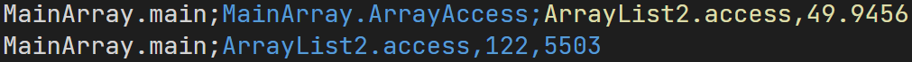

Overview

JoularJX is part of the  project.
project.
JoularJX is a Java-based agent for power monitoring at the source code level with support for modern Java versions and multi-OS to monitor power consumption of hardware and software.
JoularJX is a Java agent where you can simply hook it to the Java Virtual Machine when starting your Java program. To get power readings, JoularJX uses a custom PowerMonitor program (based on Hubblo’s Windows RAPL driver) on Windows, Intel RAPL (through powercap) on GNU/Linux, Powermetrics on macOS, and our accurate power models on Raspberry Pi and similar devices.
JoularJX is the successor of Jalen, and the core approach of statistical sampling is based and inspired by the work we did in monitoring energy hotspots in software (ASE 2012 conference paper, and ASE Journal paper in 2015).
The official website of JoularJX is: https://www.noureddine.org/research/joular/joularjx.
Features
- Monitor power consumption of each method at runtime
- Monitor the evolution of power consumption of each method
- Monitor power consumption of methods’ call tree and execution branches
- Monitor energy of Java applications running in virtual machines
- Uses a Java agent, no source code instrumentation needed
- Uses Intel RAPL (powercap interface) for getting accurate power reading on GNU/Linux, our research-based regression models on Raspberry Pi devices, and a custom program monitor (based on Intel Power Gadget) for accurate power readings on Windows
- Provides real-time power consumption of every method in the monitored program
- Provides total energy for every method on program exit
Cite this work
To cite our work in a research paper, please cite our paper in the 18th International Conference on Intelligent Environments (IE2022).
- PowerJoular and JoularJX: Multi-Platform Software Power Monitoring Tools. Adel Noureddine. In the 18th International Conference on Intelligent Environments (IE2022). Biarritz, France, 2022.
@inproceedings{noureddine-ie-2022,
title = {PowerJoular and JoularJX: Multi-Platform Software Power Monitoring Tools},
author = {Noureddine, Adel},
booktitle = {18th International Conference on Intelligent Environments (IE2022)},
address = {Biarritz, France},
year = {2022},
month = {Jun},
keywords = {Power Monitoring; Measurement; Power Consumption; Energy Analysis}
}
License
JoularJX is licensed under the GNU GPL 3 license only (GPL-3.0-only).
Copyright (c) 2021-2026, Adel Noureddine, Université de Pau et des Pays de l’Adour. All rights reserved. This program and the accompanying materials are made available under the terms of the GNU General Public License v3.0 only (GPL-3.0-only) which accompanies this distribution, and is available at: https://www.gnu.org/licenses/gpl-3.0.en.html
Author : Adel Noureddine
Supported Platforms
JoularJX support the following platforms and operating systems:
- PC/Servers using a RAPL supported Intel processor (since Sandy Bridge) or a RAPL supported AMD processor (since Ryzen), on GNU/Linux, on Windows and on macOS.
- Virtual machines (any supported guest on any guest)
The supported list of Raspberry Pi and Asus Tinker Board models are listed below. We support all revisions of each model lineup. However, the model is generated and trained on a specific revision (listed between brackets), and the accuracy is best on this particular revision.
- Raspberry Pi devices (multiple models) on GNU/Linux:
- Model Zero W (rev 1.1), for 32 bits OS
- Model 1 B (rev 2), for 32 bits OS
- Model 1 B+ (rev 1.2), for 32 bits OS
- Model 2 B (rev 1.1), for 32 bits OS
- Model 3 B (rev 1.2), for 32 bits OS
- Model 3 B+ (rev 1.3), for 32 bits OS
- Model 4 B (rev 1.1, and rev 1.2), for both 32 bits and 64 bits OS
- Model 400 (rev 1.0), for 64 bits OS
- Model 5 B (rev 1.0), for 64 bits OS
- Asus Tinkber Board (S)
| Platform | Supported OS | Based on | Supported Architecture |
|---|---|---|---|
| Linux PC/Server | GNU/Linux | RAPL (using powercap) | x86, x86_64 |
| Windows PC/Server | Windows | Hubblo’s Windows RAPL driver | x86, x86_64 |
| macOS PC | macOS | Powermetrics | x86_64, ARM |
| Raspberry Pi | GNU/Linux | Our regression models | ARM |
| Asus Tinker Board | GNU/Linux | Our regression models | ARM |
| Virtual Machine | Supported guests (Windows, Linux, macOS), any host | Host’s architecture (RAPL, regression models, others) | x86, x86_64, ARM |
Installation
JoularJX is a Java agent, and therfore provided as a .jar file.
Just use the compiled jar package for JoularJX.
JoularJX requires, at minimum, Java 11+.
JoularJX gets CPU power reading from various sources, depending on the platform or operating system. In particuliar, it can get the data from two main approaches:
- Get the power data from Joular Core, either through its standard output or through a shared memory buffer ring (IPC). Joular Core works on all platforms and operating systems.
- Get the data through its internal calculation from RAPL (Linux, Windows), powermetrics (macOS) or our own regression models (Raspberry Pi).
- In addition, in virtual machines, JoularJX reads the power consumption of the virtual machine (measured in the host) from a file shared between the host and the guest.
If using JoularJX internal calculation, you need:
- On Windows, to read the data from the RAPL driver, we use a custom program monitor called Power Monitor for Windows. It used to be part of JoularJX, but now it is in its own repository. Download the binary (or compile the source code), and specify its path in
config.properties. Runs on Intel or AMD CPUs (since Ryzen). You can substitute that software with Joular Core. Either way (WinPowerMonitor or Joular Core), you need to install the Windows RAPL driver by Hubblo. The easiest way to install the driver is to install the windows version of Scaphandre tool from this link directly (release 1.0.0). - On PC/server GNU/Linux, JoularJX uses Intel RAPL interface through powercap, and therefore requires running on an Intel CPU or an AMD CPU (since Ryzen).
- On macOS, JoularJX uses
powermetrics, a tool bundled with macOS which requires running withsudoaccess. It is recommended to authorize the current users to run/usr/bin/powermetricswithout requiring a password by making the proper modification to thesudoersfile. - On Raspberry Pi devices on GNU/Linux, JoularJX uses our own research-based regression models to estimate CPU power consumption with support for the following device models (we support all revisions of each model lineup.
Quick Usage
JoularJX is a Java agent where you can simply hook it to the Java Virtual Machine when starting your Java program’s main class:
java -javaagent:joularjx-$version.jar YourProgramMainClass
If your program is a JAR file, then just run it as usual while adding JoularJX:
java -javaagent:joularjx-$version.jar -jar yourProgram.jar
JoularJX will generate multiple CSV files according to the configuration settings (in config.properties), and will create these files in a joularjx-resultsfolder.
Compilation
To build JoularJX, you need Java 11+ and Maven, then just build:
mvn clean install
Alternatively, you can use the Maven wrappen shipped with the project with the command:
Linux and macOS: ./mvnw clean install
Windows: mvnw.cmd clean install
Configuration Properties
JoularJX can be configured by modifying the config.properties files:
filter-method-names: list of strings which will be used to filter the monitored methods (see Generated files below for explanations).save-runtime-data: write runtime methods power consumption in a CSV file.overwrite-runtime-data: overwrite runtime power data files, or if set to false, it will write new files for each monitoring cycle.logger-level: set the level of information (by logger) given by JoularJX in the terminal (allowed values: OFF, INFO, WARNING, SEVERE).powermonitor-path: Full path to the power monitor program (only for Windows).track-consumption-evolution: generate CSV files for each method containing details of the method’s consumption over the time. Each consumption value is mapped to an Unix timestamp.hide-agent-consumption: if set to true, the energy consumption of the agent threads will not be reported.enable-call-trees-consumption: compute methods call trees energy consumption. A CSV file will be generated at the end of the agent’s execution, associating to each call tree it’s total energy consumption.save-call-trees-runtime-data: write runtime call trees power consumption in a CSV file. For each monitoring cycle (1 second), a new CSV file will be generated, containing the runtime power consumption of the call trees. The generated files will include timestamps in their names.overwrite-call-trees-runtime-data: overwrite runtime call trees power data file, or if set to false, it will write new file for each monitoring cycle.application-server: properly handles application servers and frameworks (Sprig Boot, Tomcat, etc.). Settruewhen running on application servers. Iffalse, the monitoring loop will check if the JVM is destroyed, hence closing JoularJX when the application ends (in regular Java application). Iftrue, JoularJX will continue to monitor correctly as the JVM isn’t destroyed in a application server.vm-power-path: the path for the power consumption of the virtual machine. Inside a virtual machine, indicate the file containing power consumption of the VM (which is usually a file in the host that is shared with the guest).vm-power-format: power format of the shared VM power file. We currently support two formats:watts(a file containing one float value which is the power consumption of the VM), andpowerjoular(a csv file generated by PowerJoular in the host, containing 3 columns: timestamp, CPU utilization of the VM and CPU power of the VM).joular-core: if set totrue, use Joular Core instead of JoularJX internal CPU power calculations.joular-core-ring-buffer: if Joular Core is set totrue, and this property is also set totrue, then get power data from Joular Core through a shareed memory ring buffer.joular-core-path: the full path of Joular Core binary.joular-core-parameters: the parameters to run Joular Core with. It must be-c cpu -i.joular-core-ringbuffer-path: the path to Joular Core ring buffer.
You can install the jar package (and the PowerMonitor.exe on Windows) wherever you want, and call it in the javaagent with the full path.
However, config.properties must be copied to the same folder as where you run the Java command.
Generated Files
JoularJX will generate multiple CSV files according to the configuration settings (in config.properties), and will create these files in a joularjx-resultsfolder.
The generated files are available under the following folder structure:
- joularjx-results
- appName-PID-start_timestamp
- all (power/energy data for all methods, including the JDK ones)
- runtime (power consumption every second)
- calltree (consumption for each call tree branch)
- methods (consumption for each methods)
- total (total energy consumption, generated at the program’s end)
- calltree
- methods
- evolution (power consumption evolution of every method, throughout the execution of the application)
- runtime (power consumption every second)
- app (power/energy data for methods of the monitored application, according to the
filter-method-namessetting)- runtime
- calltree
- methods
- total
- calltree
- methods
- evolution
- runtime
- all (power/energy data for all methods, including the JDK ones)
- appName-PID-start_timestamp
The folder structure is summarized in the following figure:

For real-time power data or the total energy at the program exit, JoularJX generated two CSV files:
- A file which contains power or energy data for all methods, which include the JDK’s ones.
- A filtered file which only includes the power or energy data of those filtered methods (can be configured in
config.properties). This data is not just a subset of the first data file, but rather a recalculation done by JoularJX to provide accurate data: methods that start with the filtered keyword, will be allocated the power or energy consumed by the JDK methods that it calls.
For example, if Package1.MethodA calls java.io.PrintStream.println to print some text to a terminal, then we calculate:
- In the first file, the power or energy consumed by
printlnseparately fromMethodA. The latter power consumption won’t include those consumed byprintln. - In the second file, if we filter methods from
Package1, then the power consumption ofprintlnwill be added toMethodApower consumption, and the file will only provide power or energy ofPackage1methods.
We manage to do this by analyzing the stacktrace of all running threads on runtime.
Integration with Systems and Tools
JoularJX is a Java agent, and the compiled JAR file have no external dependencies. Therefore, it can be integrated and used in any Java-based virtual machine and setup.
For instance, you can add JoularJX to the run/execute parameters of your favorite IDE (Eclipse, IntelliJ Idea, NetBeans, etc.), or to your development workflow or continuous integration and delivery processes (CI/CD).
JoularJX runs indistinctly and with the same configuration options and generated files on all supported platforms, from Windows to Linux, from x86_64 servers and PC to ARM Raspberry Pi devices.
Virtual Machines
JoularJX also works inside virtual machines. All its functionalities work the same inside a virtual machine as with bare metal installation.
In virtual machines, JoularJX in the guest OS needs to get the power consumption of the virtual machine instance itself. This can only be done by installing on the host OS, a power monitoring tool (such as PowerJoular or other ones), and monitoring the power consumption of the specific guest virtual machine process.
The power data of the VM process need to be written to a shared file between the host and the guest. Inside the guest, JoularJX will read this file continuously and use the reported power value as the power of the entire virtual machine.
JoularJX is agnostic to what power tools in installed in the host and can work with any available tool that is capable of monitoring the VM process.
Use case example with JoularJX on guest and Joular Core or PowerJoular on host
A use case example is using JoularJX on the guest OS and PowerJoular on the host OS.
In the host OS
- Install Joular Core or PowerJoular
- Run Joular Core or PowerJoular while specifying the PID of the virtual machine of the guest OS, and writing the power data in a CSV file in overwrite mode.
- For instance, you can run PowerJoular with the following command:
powerjoular -p $VM_PID -o /home/vm/vm.csv - Share the
/home/vm/vm.csvbetween the host OS and the guest OS
In the guest OS
- Get and compile JoularJX
- Share the
/home/vm/vm.csvbetween the host OS and the guest OS, potentially having a different path of the file inside the guest. For instance,/opt/vm/vm.csv - Modify
config.propertiesand set ``vm-power-pathto the shared file/opt/vm/vm.csv, andvm-power-formatto the proper format (in this case topowerjoular```). - Start your Java application with JoularJX agent as usual.
How JoularJX Works
JoularJX is a Java agent that hooks to the Java Virtual Machine (JVM) on startup along with the monitored application. It runs in a separate thread and collects information about CPU usage of the JVM process, each thread running in the JVM, and then for each method of the application.
JoularJX is the successor of Jalen, and the core approach of statistical sampling is based and inspired by the work we did in monitoring energy hotspots in software (ASE 2012 conference paper, and ASE Journal paper in 2015). JoularJX version 1 is described in our newer research paper at the IE 2022 conference.
The general architecture of JoularJX is summarized in the following figure:

The monitoring process is as follows:
- Every application monitoring cycle (by default, 1 second), JoularJX collects the CPU usage of the JVM and calculates the power consumption of the entire JVM (on Windows, using the PowerMonitor.exe program using Intel API, on x86_64 Linux using RAPL interface in the Linux kernel, and on Raspberry Pi and Asus Tinker Board using our regression power models).
- Then, JoularJX collects the CPU usage of each thread in the JVM using the JDK’s
getThreadCpuTimemethod, and calculates the power consumption of each thread. - Every source code monitoring cycle (by default, 10 milliseconds), JoularJX checks, for each thread, the stacktrace and identify the method being executed (the method on top of the stacktrace). At the end of the application monitoring cycle, JoularJX statistically analyzes the ratio of each method observed in the stacktrace, and allocate the power consumption accordingly as seen in the following figures:


Usually the method on the top of the stacktrace is a method from the JDK.
For example, calling System.out.println() from the application’s method Main will call other methods from the JDK (such as buffers, writeln, etc.).
JoularJX will verify, when checking the stacktrace, if the method is called, anywhere in its call tree, by a method from the application we wish to monitor, and thus isolate these statistics from methods called by other applications or by the JoularJX agent itself.
During these monitoring cycles, JoularJX not only identify the method being executed, but also its execution branch (all the methods calling it), and can provide power and energy consumption for each execution branch as seen in the following figures:


JoularJX will also automatically calculate the power consumption for each method, for each timestamp, thus allowing to trace the power consumption evolution of each method, as seen in the following figure: